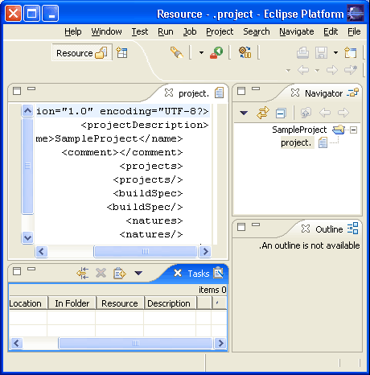

A bidirectional language is one that can write either right to left or left to right based on context. Bidirectional text is supported throughout the platform. Eclipse will recognize Hebrew, Arabic, Farsi and Urdu as bidirectional by default.
The orientation of the workbench is determined in one of the following ways (in order of priority):
In JFace, the orientation can be determined by calling org.eclipse.jface.Window#getDefaultOrientation(). Standalone JFace applications must set the default orientation by calling org.eclipse.jface.Window#setDefaultOrientation(), otherwise it will assume a default value of SWT.NONE. The default orientation is set automatically when running the Workbench. All subclasses of org.eclipse.jface.Window inherit this default orientation.
Views and editors inherit the window orientation from their parent. Dialogs should inherit orientation by using the shell style of their superclass by calling super.getShellStyle() when creating or configuring their shell.

Figure 1 - Screen shot of right to left orientation of the resource perspective in English
The orientation of the workbench is independant of the special case processing
for bidirectional languages. If the language of the current Locale is Hebrew,
Arabic, Farsi or Urdu text processing will be enabled. Text processing is used
to handle special case characters that should not be processed as birdirectional
text such as path seperators. See org.eclipse.osgi.util.TextProcessor
for more details.
In many cases your icons will not make any sense in right to left mode. In particular any icon to do with editing will have this issue.To enable lookup of images in a fragment, use $nl$ in your icon path and use the org.eclipse.core.runtime.FileLocator class to find icons at runtime.
For example
String iconPath = "$nl$/icons/myicon.gif"; URL url = FileLocator.find( Platform.getBundle(MyPluginId), new Path(iconPath), null); Image Descriptor descriptor = ImageDescriptor.createFromURL(url);
If the icon reference is in your plugin.xml file, make sure you have the $nl$ prefix on your path and the lookup will be handled for you. If you define your own extension points that involve icons, be sure to load images in the same way.
There are no hard and fast rules for determining what icons need to be overridden in a right to left language. In general, focus on icons that imply a textual direction with a horizontal arrow.